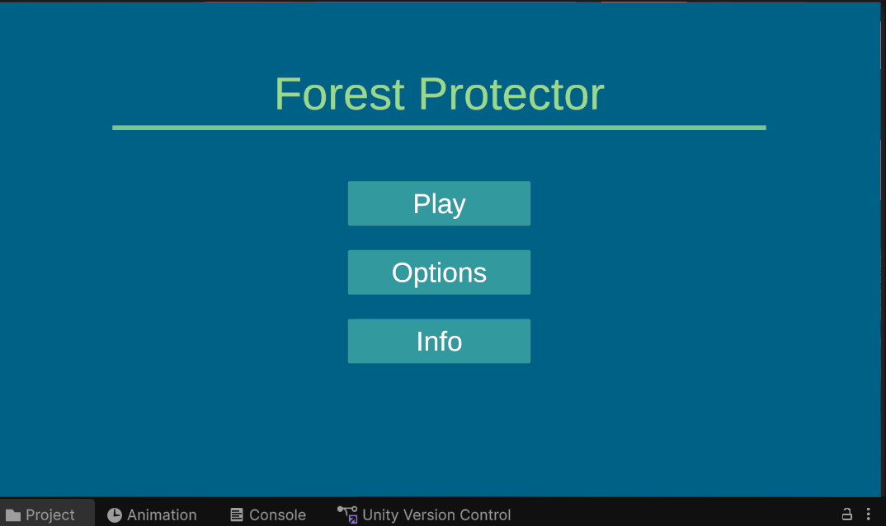
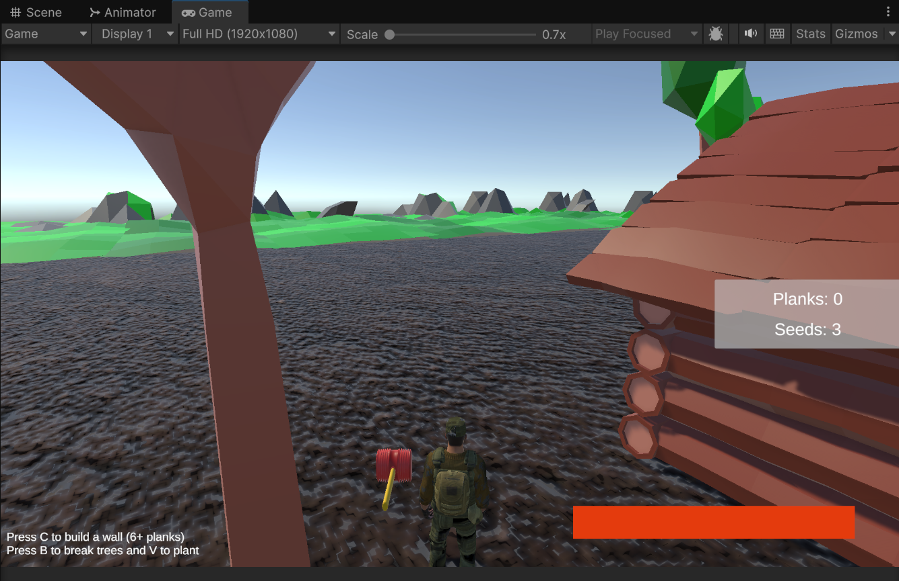
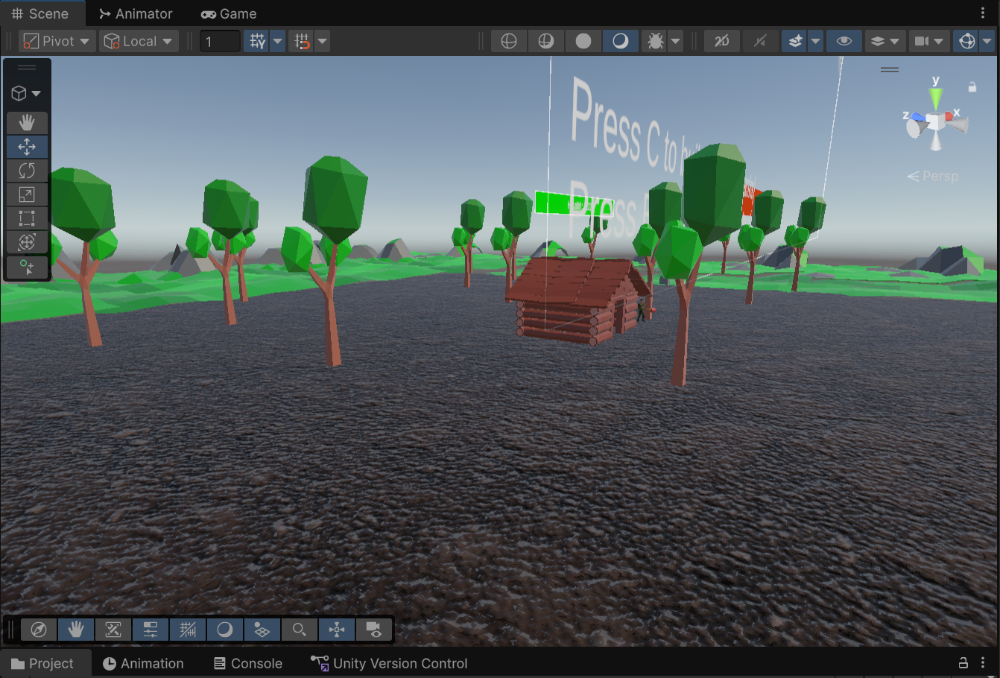
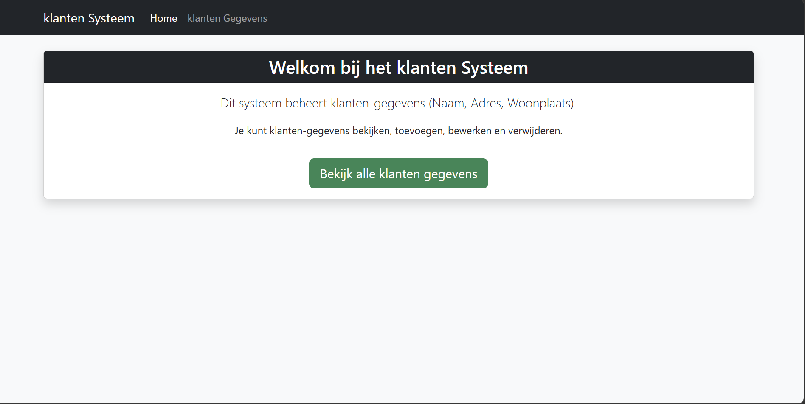
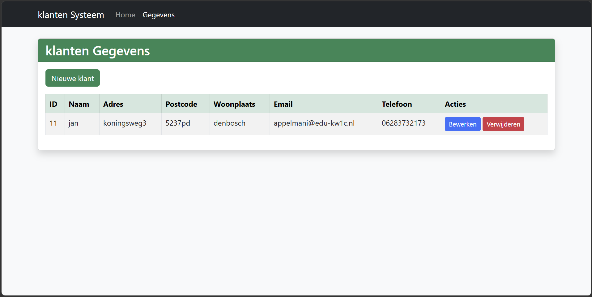
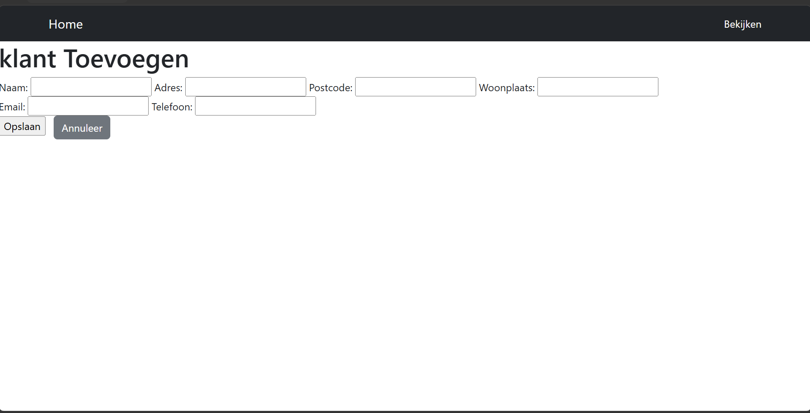
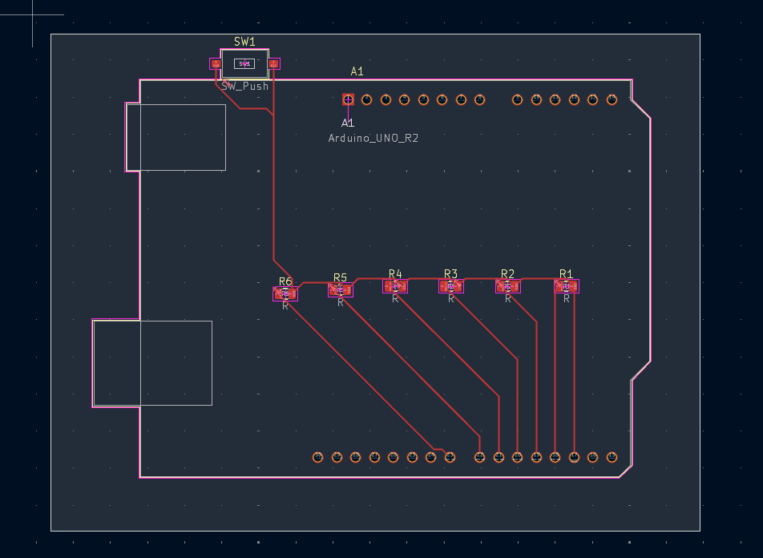
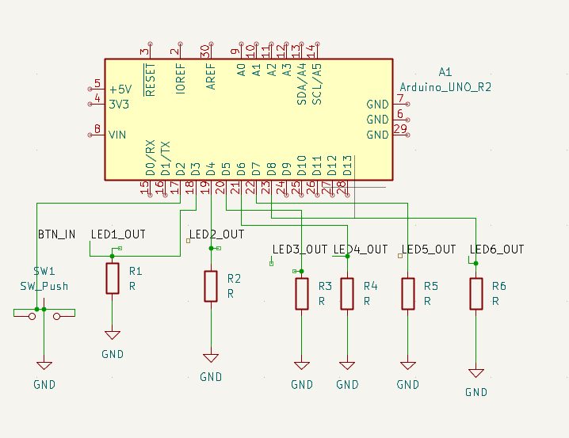

17 jaar, Software Developer student. Ik werk met JavaScript, game development, embedded systemen en ik ontwerp mijn eigen custom PCB’s.
Ik heb een game gemaakt genaamd Forest Protectors. Het concept is simpel maar leuk: je moet je houten gebouw beschermen tegen rotsen die het proberen te vernietigen. Het is een prototype waar ik trots op ben en ik wil het later verder uitbreiden.



Ik heb een klantendatabasesysteem gebouwd waarin je klanten kunt toevoegen, bekijken, bewerken en verwijderen. Dit project laat mijn vaardigheden in webontwikkeling en databases zien.



Dit was mijn tweede zelfontworpen custom PCB‑project, volledig gemaakt in KiCad. Hiermee laat ik zien dat ik zowel software als hardware kan ontwerpen en begrijpen hoe embedded systemen samenwerken.


Ik ben altijd bezig met leren, bouwen en nieuwe dingen proberen. Ik combineer graag software met hardware en vind het leuk om creatieve projecten te maken.
GitHub: Nadir678
E‑mail: nadirlaouini272@gmail.com